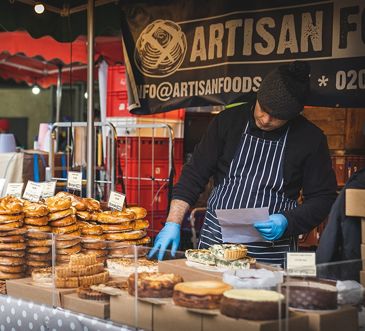

There's all sorts of magical wonders to explore in the market. From food, tours, to edible gifts and sight-seeing nearby.
So, let's dive into the wonders of the Borough Market with all the info you need to know!
Things to Do:


| Stalls to buy at | Food | Where to buy drinks that are family friendly! |
|---|---|---|
| Bread Ahead, Khao Bird, El Pastor, Juma, Humble Crumble, Turnips. | Creme Brulee donuts from Bread Ahead, Chocolate strawberries from Turnips, Padella's fresh pasta, Kappacasein for toasties. | The Natural Smoothie company, Greengrocers, seasonal fruit juices and juice shots, We Juice It and there are other stalls that have hot cocoa or other kid friendly beverages. | Restaurants to Eat at | Best places to buy gifts | Best Tours |
| Padella, the Smoked Pig, Elliot's, Camile, Black and Blue, 'O Ver Borough, Boro Bistro, Honest Burgers. | Borough Market Store, Richard Bramble, Whirld, Red Bus Shop, Rymen Stationary, Tate Modern Shop, and many gifts are food related or edible. | London Food Tour, Celia Brooks' Borough Market Tour, Behind-The-Scenes tour, Tours by Foot, London City Walks and many others. |
| Places to Explore | Everything you Need to Know | Movies filmed Here! |
| The Shard, Southwark Cathedral, London Dungeon, Tower Bridge & Riverside Walk, Red Cross Garden, Roast Restaurant. | Some of its opening hours are: Tuesday to Friday from 10 AM to 5 PM, on Saturday it opens slightly earlier at 9 AM. How to get there is if you're travelling by tube, the nearest tube station is London Bridge, and by Bus it is on routes 43, 141, 149 and 388. The market gets very busy so the best time to spend there is roughly 90 minutes or even 2-3 hours to explore. There are guided tours, some general suggestions are: it is dog friendly as long as they are leashed, no smoking is allowed, toilets are available during market hours, the area is prone to pick-pockets so be careful! Wear comfortable shoes. | Bridget Jones's Diary & Series, Harry Potter & The Prisoner of Azkaban, Lock, Stock and Two Smoking Barrels, The French Connection. |